Iwaki,
Aug 22, 2004
(organised by Victor)
Photos by Libor
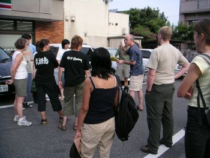
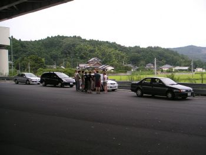
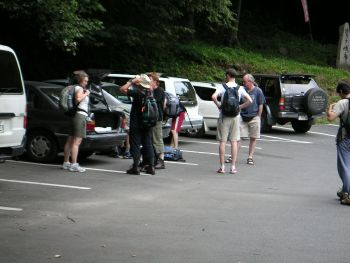
Instructions before leaving
regrouping after the highway
start walking at from the parking
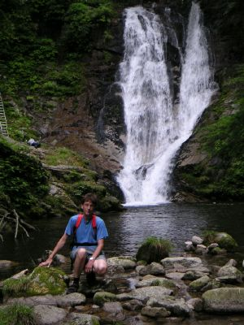
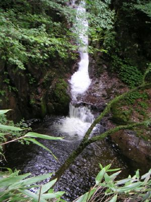
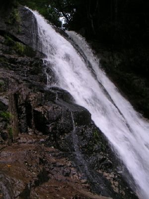
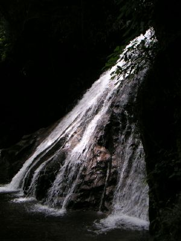
the many waterfalls
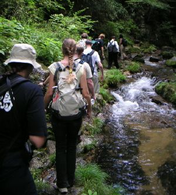
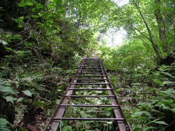
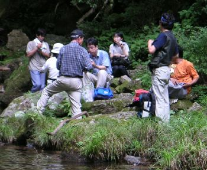
one of the ladders
lunch
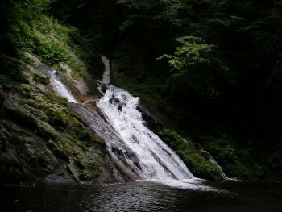
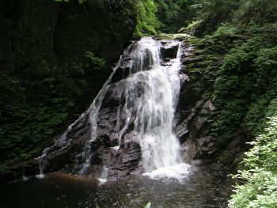
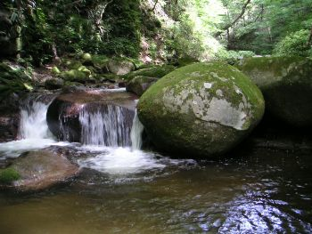
and then the Barbeque by chef Victor!!
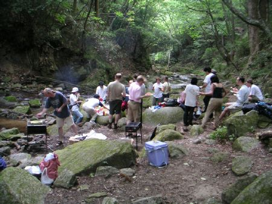
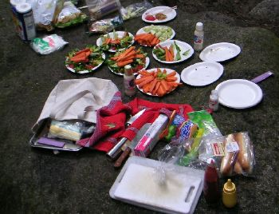
Back to the Home Page